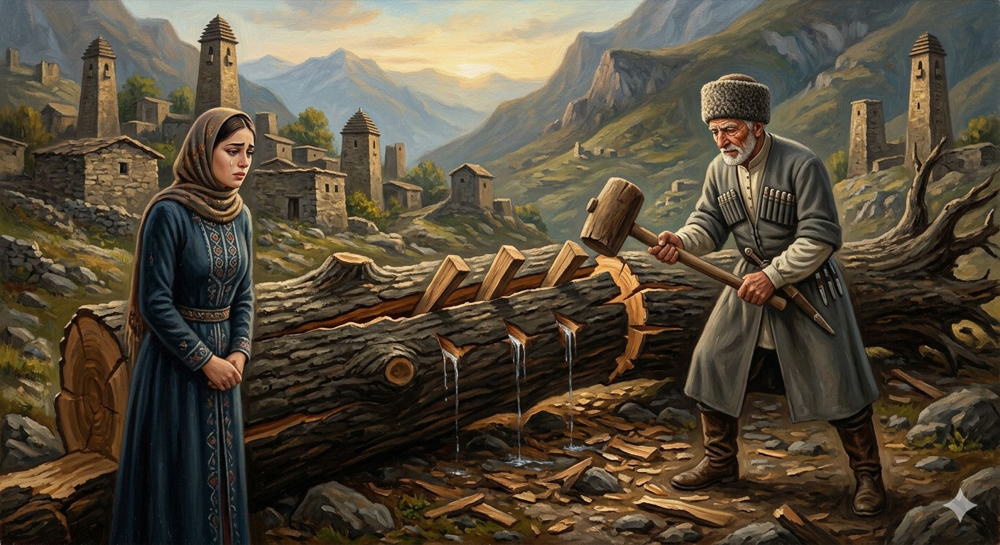

И.А. Дахкильгов. Хьехаме дувцарш - поучительные рассказы-притчи.
И.А. Дахкильгов. Хьехаме дувцарш - поучительные рассказы-притчи. Из ингушского фольклора.

Попа бийлхаб
Коа уллача попа хенах чӀоагӀа диг дийттад. Цхьаккха дарах поп баттӀаш хиннабац. ТӀаккха кхыча цхьан попах яьхача гударгех загалаш даьд. Уж загалаш детта болабеннаб. Поп, эттӀаш, эттӀаш, тӀехьара баьттӀаб. Цигач бийлхаб, йоах, из попа хи: - Цхьаккхача моастагӀчоа маганзар со эшабе, хӀаьта вежараша баь тийшаболх бахар сох!
РУССКИЙ
Чинара заплакала
Что было сил били по сваленной чинаре топором. Однако никак бревно расколоть не могли. Тогда из поленьев какой-то другой чинары нарубили клинья и стали их забивать в бревно. Теперь оно начало трескаться, клинья забивали все глубже, и наконец, бревно раскололось надвое. Тогда, говорят, чинара в слезах сказала: "Никакой враг не смог меня одолеть, но подвело меня предательство моих сестер".
ENGLISH
Chinara burst into tears
With all their might, they struck the felled plane tree with an axe. However, they could not split the log no matter what they did. Then, from the logs of another plane tree, they cut wedges and began to drive them into the log. Now it began to crack; they drove the wedges in deeper and deeper, and finally, the log split in two. Then, they say, the plane tree said, in tears: 'No enemy could overcome me, but I was betrayed by my sisters.'
НОХЧИЙН
ПОГОВОРКИ
Аьшка ниӀ зӀара наӀарга яхай. - Железные ворота пошли (на поклон) к плетню.Аьшкача дигал чӀоагӀагӀа хул дахчан загал. - Случается, что деревянный клин крепче железного топора.Бетташ, бетташ, кхера а баьттӀаб. - Бьешь, бьешь, глядишь, и камень разобъешь.Вешийна воша эш, йишийна йиша эш. - Брату нужен брат, а сестре – сестра.Дагаро ца боаттӀабаь хи дахчан загало боатӀабаьб. - Бревно, которое не смог расколоть железный топор, расколол деревянный клин.Мел йоккха га яр, аьнна, зӀамигача дагаро йожаю из. - Как ни велико дерево, маленький топор его валит.Наьха бий ца байзачоа шийчох водж хийттай. - Не познавшему тяжесть чужого кулака, свой кулак казался кувалдой.Низ хилар пайда бац, из бахьа хьа моттиг еце. - Нет проку от твоей силы, если ее негде применить.ТӀаьда болаш ца хьовзабаь саьрг бокъабелча хьовзабеннабац. - Прут зеленый – гнется, высохший – ломается.Цкъа хаьда хӀама нийса хотаденнадац. - Раз порвавшееся, уже без узла не соединить.Ший дегӀах кхийтта саьрг бекъа санна хет. - И прут тебе кажется оглоблей, если им ударили тебя.